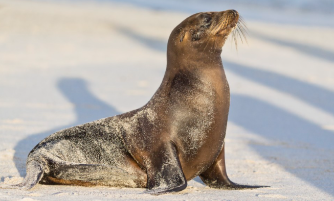

강치이야기

<자료제공:해양수산부 공식블로그>
독도는 바다사자 강치의 보금자리로 19세기까지 3~5만여 마리가 살았데요.
1951년 독도에서 50~60마리가 확인되었다는 보고를 마지막으로 지금은 멸종되었습니다.
- 강치(=바다사자)
- 독도에는
- 가제바위 등 주변에 바다사자가 쉬기에 좋은 바위가 많았고
- 난류와 한류가 뒤섞여 먹이가 풍부해 바다사자들의 주요 번식지이자 서식지였답니다.
- 멸종
- 1900년대 초 일본제국의 상업적 어획기록을 살펴보면 3,200마리 정도의 바다사자가 포획되었으나
- 남획으로 인해 1915년에는 불과 300마리만 잡힐 정도로 포획량이 급감했고,
- 1930년대에는 수십 마리 정도로 떨어졌어요.
- 복원 시도
- 2007년, 대한민국 환경부는 남북한과 러시아, 중국이 협조하여 독도 바다사자를 동해에 복원할 것이라고 발표했어요.
- 이 프로젝트의 실행가능성 조사 연구가 국립환경과학원에
일임되었어요.
- 대한민국의 바다사자 복원 시도는 동해와 독도를 둘러싼 국가적 민족적 상징성이 있답니다.
- 본문내용 위키백과 참조